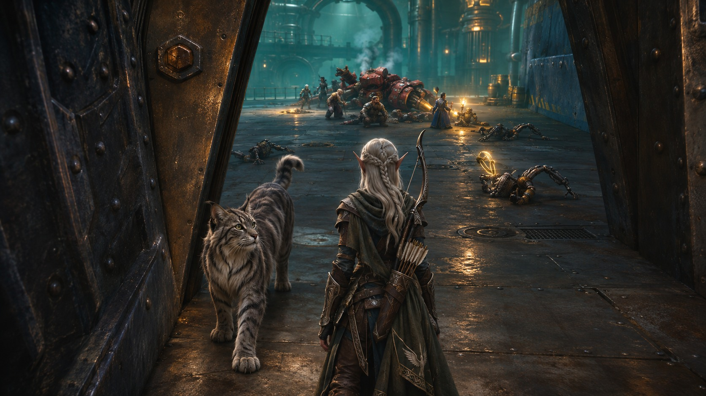

I had Refuge Point in my head when I left Goldshire. By the time I’d run to Lakeshire, caught a gryphon to Duskwood, and followed the road south into Stranglethorn, I had the name right. Rebel Camp. I wrote it down twice. There’s a great deal of ground between a name on a map and the people waiting for help.
Lionel Lionguard and I went after Kurzen’s fighters together. We found the fern extract and worked through the camp for the jungle remedy, though I had my seven while Lionel still needed two. I told him to open the spoils to both of us and take what he needed. He was nearly done with the fighters and said he could finish on his own. I thanked him and took the trail back to camp with Sylthara. We turned in the medicine and reported on the fighting. There was still a cook in a cage and more to learn about Kurzen. I left with both matters on my mind.
A lesson in Desolace
The trail for Sylthara’s training took me clear across the sea to Desolace. Down near Magram Village, where the centaurs’ bridges cross yellow pools, I tamed a scorpid. There’s a moment before it strikes when all those legs seem to go still, and then the pincers are already closing. I had to watch it work before I could teach Sylthara anything from it. By the time I had my cat back beside me, she knew a sharper way to use her claws. She already had the bite for close work. Now she had both.
Then it was back across the world to Booty Bay with word for Krazek, and up the Vale again with supplies for Private Thorsen. By Nesingwary’s camp I’d settled into the rhythm of the day. A stretch of road with the Aspect of the Cheetah to hurry my feet, then a turn into the brush where the ground had to be read slowly. Sylthara took the rush of the young tigers while I found a clear lane for the bow. We hunted panthers and raptors too. You can see a long way from the sky, but a paw print under a wet leaf is something you have to get down on your knees to see.
Erik Mcflagon pulled me into his party just as Sin’Dall fell. We’d missed the chance to count the hunt together by a breath. He apologized and bowed, and I stayed in the jungle until Sylthara and I had a chance of our own. We brought the paw back to camp. I was glad Erik had thought to call me over, even if the jungle had run on ahead of us.
Gnomeregan
Caspar Croft led the party from Dun Morogh into Gnomeregan. Faye Lorne and John Deathsunder joined us, and Katherine Cheshire, who’d just come out of another run, went back under the mountain with us. Katherine was from my own guild, and I was glad to have her at the front. Faye offered water before we started. John was still finding which quests he could pick up inside. I’d come from Stormwind with a request to rescue some data and only a hazy idea which door to take.
From above, a city has a shape you can hold in your head. In Gnomeregan I could see a doorway, a ramp, maybe the far side of a chamber. Pipes crossed overhead where I expected sky. The whole place had been built for people to live and work in, and there was something worse about the poison and the troggs for being able to see the care that had gone into it.
Grubbis came out of the tunnels with Chomper close by. I kept enough room to draw and sent Sylthara in where the passage narrowed. We came next to the Hall of Gears, where the Viscous Fallout heaved itself across the floor. There’s little comfort in taking aim at a thing whose shape keeps changing. I watched where Sylthara went and shot into the mass beyond her. In the Launch Bay, the Electrocutioner made the air crackle. We put it down, and somewhere in the fighting that followed I reached my thirty-fifth level. There was time to notice it. There was barely time to smile.
Thermaplugg had the Tinkers’ Court rigged to send walking bombs across the floor. That was the fight that held my attention. Every time I settled into the draw, another little machine gave the room a second place to look. Faye turned her spells on the bombs. John caught them in consecrated ground. Caspar kept healing while Katherine held Thermaplugg’s attention. Sylthara stayed close enough to rake him with the claws we’d worked on that morning. He knocked her away near the end. I kept my arrows going into him and watched for her out of the corner of my eye. Then Thermaplugg went down, and for a moment I could hear the room again.
There was still a fight in the Engineering Labs. The Crowd Pummeler came at us on heavy red limbs, and we took it down from the mouth of the chamber. Afterward Katherine kept us moving through the turns, helped us find the ring turn-in, and remembered where to look for Kernobee. He followed us all the way toward the exit. We could hear him calling that he saw it. Someone crossed the threshold too soon, and the escort failed within sight of daylight. That’s the part I’ll remember the next time someone says we’re nearly out.
The Lion’s Pride
I thanked Katherine before we parted. I turned in the artificials and reported Thermaplugg’s defeat. There was an errand to finish for the owner of the ring, too. The roads still took me as far as Darnassus and back through Ironforge for weapons training before I was done.
I’d taken a nap by the fire in Goldshire earlier. Tonight I made it as far as my room at the Lion’s Pride. All those miles to teach my cat to strike, and when I set the bow down, what I wanted was to hear her settling beside me.